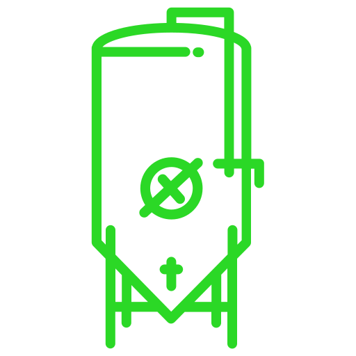

<!DOCTYPE html>
<html lang="pt-br">

<head>
    <link rel="shortcut icon" href="../assets/icon/favicon2.ico" type="image/x-icon">
    <meta charset="UTF-8">
    <meta http-equiv="X-UA-Compatible" content="IE=edge">
    <meta name="viewport" content="width=device-width, initial-scale=1.0">
    <title>Wynn | Dashboards</title>


    <link rel="stylesheet" href="../css/dasboard/dashboards.css">
    <link rel="stylesheet" href="../css/dasboard/dash.css">
    <link rel="stylesheet" href="../css/dasboard/styleDashboard.css">

    <script src="../JS/sessao.js"></script>
    <script src="./../JS/alerta.js"></script>

    <link rel="preconnect" href="https://fonts.gstatic.com">
    <link
        href="https://fonts.googleapis.com/css2?family=Exo+2:ital,wght@0,100;0,200;0,300;0,400;0,500;0,600;0,700;0,800;0,900;1,100;1,200;1,300;1,400;1,500;1,600;1,700;1,800;1,900&display=swap"
        rel="stylesheet">

    <!-- scripts do Chart.js - 2022-1 -->
    <script src="https://cdn.jsdelivr.net/npm/chart.js"></script>
    <script
        src="https://cdn.jsdelivr.net/npm/chartjs-plugin-annotation@3.1.0/dist/chartjs-plugin-annotation.min.js"></script>

    <!--FONT AWESOME-->
    <script src="https://kit.fontawesome.com/9f7414eb10.js" crossorigin="anonymous"></script>
    <!--  <link rel="stylesheet" href="../css/dash.css"> -->
    <link rel="stylesheet" href="https://cdnjs.cloudflare.com/ajax/libs/font-awesome/6.6.0/css/all.min.css">
</head>

<!-- <body onload=" atualizarFeed()"> -->

<body onload="atualizarFeed()"></body>

<!-- 
    <div class="janela">
        <div class="header-left">
            <h1>AquaTech</h1>

            <div class="hello">
                <h3>Olá, <span id="b_usuario">usuário</span>!</h3>
            </div>

            <div class="btn-nav-white">
                <a href="./cards.html">
                    <h3>Aquários</h3>
                </a>
            </div>

            <div class="btn-nav">

                <h3>Gráficos</h3>

            </div>

            <div class="btn-nav-white">
                <a href="./mural.html">
                    <h3>Mural de Avisos</h3>
                </a>
            </div>

            <div class="btn-logout" onclick="limparSessao()">
                <h3>Sair</h3>
            </div>

        </div>
 -->

<!--     <div class="dash">
            <div id="alerta">
            </div>

            <div class="btns-dash" id="btnAquario"> -->
<!-- O gráfico é chamado de acordo com o id (fk_aquario) do banco  -->
<!--           </div>
            <div id="graficos">
            </div>
        </div> -->

<!-- HTML para plotar o resultado da chamada da IA -->

<!-- <div id="container" style="width:500px; position: absolute; background-color: aqua; top: 30%; right: 10px;">
    <center>
        <h1>BobIA</h1>
        <textarea id="pergunta" type="text" placeholder="Digite a pergunta..."></textarea>
        <br><br>
        <button onclick="gerarResposta()">Gerar Resposta</button>
        <h3>Resposta da IA:</h3>
        <div id="resposta"></div>
    </center>
</div>
 -->

<section id="banner-Dashboard">
    <div id="h-menu" class="hanburger-menu">
        <div class="menu-icon" onclick="mostrarMenu()">
            <div id="line-1" class="icon-line icon-line-1"></div>
            <div id="line-2" class="icon-line icon-line-2"></div>
            <div id="line-3" class="icon-line icon-line-3"></div>
        </div>
        <div class="menu-box">
            <h2>MENU</h2>
            <a href="./dashboard.html" name="a_botao_menu">
                <div class="menu-item">Dashboard</div>
            </a>
            <a href="./tanque.html" name="a_botao_menu">
                <div class="menu-item">Tanque</div>
            </a>
            <a href="./tipos_vinho.html" name="a_botao_menu">
                <div class="menu-item">Métrica</div>
            </a>
            <div class="item-logout">
                <a onclick="limparSessao()" style="cursor: pointer;">
                    
                    <span>Sair</span>
                </a>
            </div>
        </div>
    </div>
    <header class="header-dashboard">
        
    </header>
    <div class="container-dashboard">
        <div class="dashboard fundo-escuro">
            <div class="titulo-dashboard">
                <h3>Olá, <span id="b_usuario">usuário</span>!</h3>
            </div>
            <div id="lista_tanquesID" class="lista_tanques">
            </div>

            <div class="itens_dashboard">
                <div class="listaTanques btns-dash" id="btnAquario">
                </div>

                <div class="linha-dashboard">
                    <div class="elemento-estreito elemento center formatacao">
                        <h2 style="text-align: center">
                            CO2 (%)
                        </h2>

                        <div id="grafico_co2" class="center"></div>

                    </div>
                    <div class="elemento-estreito elemento center formatacao">
                        <h2 style="text-align: center;">TEMPERATURA</h2>
                        <div class="mostrar_temperatura">
                            <div id="display_temperaturaMax">
                            </div>

                            <div id="display_temperatura">
                            </div>
                            <div id="display_temperaturaMin">
                            </div>
                        </div>

                    </div>

                    <div id="dashboard_alerta" class="elemento-estreito elemento center formatacao">

                    </div>

                    <div class="elemento-estreito elemento center formatacao">
                        <h2 id="tempo-fermentacao-h2">TEMPO DE FERMENTAÇÃO</h2>
                        <p id="tempo-fermentacao">

                        </p>
                    </div>
                    <div class="elemento-grafico elemento">

                        <div id="graficosA"></div>
                    </div>


                    <div class="elemento-grafico elemento">

                        <div id="graficosB"></div>
                    </div>
                </div>
                <div class="listaAvisos">
                    <div id="alerta">
                    </div>
                </div>
            </div>

        </div>


    </div>

</section>


</div>
</body>

</html>
<script data-jsd-embedded data-key="462d26a8-5f6d-4498-a3d3-1cd3a9336de1"
    data-base-url="https://jsd-widget.atlassian.com" src="https://jsd-widget.atlassian.com/assets/embed.js"></script>

<script src="./dashboard.js"></script>
<script src="./timer.js"></script>
<script src="../JS/sidebar.js"></script>
<script>


    b_usuario.innerHTML = sessionStorage.NOME_USUARIO;

    if(sessionStorage.FUNCIONARIO) {
        desabilitarBotoes()
    }

    function desabilitarBotoes () {
        const botoesMenu = document.getElementsByName('a_botao_menu')

        botoesMenu.forEach(botao => {
            botao.style.display = 'none'
        });
    }

    let proximaAtualizacao;

    window.onload = exibirAquariosDoUsuario();

    function exibirAquariosDoUsuario() {
        var aquarios = JSON.parse(sessionStorage.AQUARIOS);


        exibirTemporizador(aquarios[0].id)

        aquarios.forEach(item => {
            document.getElementById("btnAquario").innerHTML += `
            <div class="btn-tanque" id="${item.id}">           
                <button class="btn-chart" onclick="exibirAquario(${item.id}); obterKPI(${item.id}, 1); exibirTemporizador(${item.id})" id="btnAquario${item.id}">${item.descricao}</button>
            </div>
            `

            document.getElementById("graficosA").innerHTML += `
                <div id="graficoA${item.id}" class="display-none">
                    
                    <div class="graph">
                        <canvas id="myChartCanvasA${item.id}"></canvas>
                    </div>
                    
                    <div class="label-captura">
                        <p id="avisoCaptura${item.id}" class="aviso-captura"></p>
                    </div> 
                  
                </div>
            `

            document.getElementById("graficosB").innerHTML += `
                <div id="graficoB${item.id}" class="display-none">
                   
                    <div class="graph">
                        <canvas id="myChartCanvasB${item.id}"></canvas>
                    </div>
                    
                    <div class="label-captura">
                        <p id="avisoCapturaB${item.id}" class="aviso-captura"></p>
                    </div> 
                  
                </div>
            `
            document.getElementById("dashboard_alerta").innerHTML += `
                        
                     <div id="alerta-status${item.id}" class="display-none">
                                <h2>STATUS</h2>
                                <p class="p-alerta"><span class="span-alerta">Tanque Inativo</span></p>
                            </div>
                      
                    </div>
                `

            document.getElementById("lista_tanquesID").innerHTML += `
                              
                <div id="tanque_atual${item.id}" class="display-none">TANQUE: ${item.descricao}</div>
         
                   `

            obterDadosGrafico(item.id)


        });

        if (aquarios.length > 0) {
            exibirAquario(aquarios[0].id)
        }
    }

    function alterarTitulo(idAquario) {
        var tituloAquario = document.getElementById(`tituloAquario${idAquario}`)
        var descricao = JSON.parse(sessionStorage.AQUARIOS).find(item => item.id == idAquario).descricao;
        tituloAquario.innerHTML = "Últimas medidas de Temperatura e Umidade do <span style='color: #e6005a'>" + descricao + "</span>"
    }

    function exibirAquario(idAquario) {
        let todosOsGraficos = JSON.parse(sessionStorage.AQUARIOS);

        for (i = 0; i < todosOsGraficos.length; i++) {
            // exibindo - ou não - o gráfico
            if (todosOsGraficos[i].id != idAquario) {
                let elementoAtual = document.getElementById(`graficoA${todosOsGraficos[i].id}`)
                if (elementoAtual.classList.contains("display-block")) {
                    elementoAtual.classList.remove("display-block")

                }
                elementoAtual.classList.add("display-none")

                let elementoAtual2 = document.getElementById(`graficoB${todosOsGraficos[i].id}`)
                if (elementoAtual2.classList.contains("display-block")) {
                    elementoAtual2.classList.remove("display-block")

                }
                elementoAtual2.classList.add("display-none")

                let elementoAtual3 = document.getElementById(`alerta-status${todosOsGraficos[i].id}`)
                if (elementoAtual3.classList.contains("display-block")) {
                    elementoAtual3.classList.remove("display-block")

                }
                elementoAtual3.classList.add("display-none")

                let elementoAtual4 = document.getElementById(`tanque_atual${todosOsGraficos[i].id}`)
                if (elementoAtual4.classList.contains("display-block")) {
                    elementoAtual4.classList.remove("display-block")

                }
                elementoAtual4.classList.add("display-none")

                // alterando estilo do botão
                let btnAtual = document.getElementById(`btnAquario${todosOsGraficos[i].id}`)
                if (btnAtual.classList.contains("btn-pink")) {
                    btnAtual.classList.remove("btn-pink")
                }
                btnAtual.classList.add("btn-white")

            }
        }

        // exibindo - ou não - o gráfico
        let graficoExibir = document.getElementById(`graficoA${idAquario}`)
        graficoExibir.classList.remove("display-none")
        graficoExibir.classList.add("display-block")

        let graficoExibir2 = document.getElementById(`graficoB${idAquario}`)
        graficoExibir2.classList.remove("display-none")
        graficoExibir2.classList.add("display-block")

        let statusExibir = document.getElementById(`alerta-status${idAquario}`)
        statusExibir.classList.remove("display-none")
        statusExibir.classList.add("display-block")

        let tanqueExibir = document.getElementById(`tanque_atual${idAquario}`)
        tanqueExibir.classList.remove("display-none")
        tanqueExibir.classList.add("display-block")

        // alterando estilo do botão
        let btnExibir = document.getElementById(`btnAquario${idAquario}`)
        btnExibir.classList.remove("btn-white")
        btnExibir.classList.add("btn-pink")
    }

    // O gráfico é construído com três funções:
    // 1. obterDadosGrafico -> Traz dados do Banco de Dados para montar o gráfico da primeira vez
    // 2. plotarGrafico -> Monta o gráfico com os dados trazidos e exibe em tela
    // 3. atualizarGrafico -> Atualiza o gráfico, trazendo novamente dados do Banco

    // Esta função *obterDadosGrafico* busca os últimos dados inseridos em tabela de medidas.
    // para, quando carregar o gráfico da primeira vez, já trazer com vários dados.
    // A função *obterDadosGrafico* também invoca a função *plotarGrafico*

    //     Se quiser alterar a busca, ajuste as regras de negócio em src/controllers
    //     Para ajustar o "select", ajuste o comando sql em src/models
    function obterDadosGrafico(idAquario) {

        //alterarTitulo(idAquario)

        if (proximaAtualizacao != undefined) {
            clearTimeout(proximaAtualizacao);
        }

        fetch(`/medidas/ultimas/${idAquario}`, { cache: 'no-store' }).then(function (response) {
            if (response.ok) {
                response.json().then(function (resposta) {
                    console.log(`Dados recebidos: ${JSON.stringify(resposta)}`);
                    resposta.reverse();
                    plotarGrafico(resposta, idAquario);
                });
            } else {
                console.error('Nenhum dado encontrado ou erro na API');
            }
        })
            .catch(function (error) {
                console.error(`Erro na obtenção dos dados p/ gráfico: ${error.message}`);
            });
    }

    // Esta função *plotarGrafico* usa os dados capturados na função anterior para criar o gráfico
    // Configura o gráfico (cores, tipo, etc), materializa-o na página e, 
    // A função *plotarGrafico* também invoca a função *atualizarGrafico*
    function plotarGrafico(resposta, idAquario) {

        console.log('iniciando plotagem do gráfico...');

        // Criando estrutura para plotar gráfico - labels
        let labels = [];

        // Criando estrutura para plotar gráfico - dados
        let dadosUmidade = {
            labels: labels,
            datasets: [{
                label: 'Nivel de CO2',
                data: [],
                fill: false,
                borderColor: 'rgb(75, 192, 192)',
                tension: 0.1
            }/* ,
            {
                label: 'Temperatura',
                data: [],
                fill: false,
                borderColor: 'rgb(199, 52, 52)',
                tension: 0.1
            } */]
        };

        let dadosTemperatura = {
            labels: labels,
            datasets: [
                {
                    label: 'Temperatura em Celcius',
                    data: [],
                    fill: false,
                    borderColor: 'rgb(199, 52, 52)',
                    tension: 0.1
                }]
        };

        console.log('----------------------------------------------')
        console.log('Estes dados foram recebidos pela funcao "obterDadosGrafico" e passados para "plotarGrafico":')
        console.log(resposta)

        // Inserindo valores recebidos em estrutura para plotar o gráfico
        for (i = 0; i < resposta.length; i++) {
            var registro = resposta[i];
            labels.push(registro.momento_grafico);
            dadosUmidade.datasets[0].data.push(registro.umidade);
            dadosTemperatura.datasets[0].data.push(registro.temperatura);
        }

        console.log('----------------------------------------------')
        console.log('O gráfico será plotado com os respectivos valores:')
        console.log('Labels:')
        console.log(labels)
        console.log('Dados:')
        console.log(dadosUmidade.datasets)
        console.log(dadosTemperatura.datasets)
        console.log('----------------------------------------------')

        // Criando estrutura para plotar gráfico - config
        const remToPx = rem => rem * parseFloat(getComputedStyle(document.documentElement).fontSize);

        const config = {
            type: 'line',
            data: dadosUmidade,
            options: {
                plugins: {
                    title: {
                        display: true,
                        text: `CO2`
                    },
                    legend: {
                        labels: {
                            font: {
                                size: remToPx(1.1)
                            }
                        }
                    },
                    responsive: true,
                    maintainAspectRatio: true
                    /*    annotation: {
                           annotations: {
                               line1: {
                                   type: 'line',
                                   yMin: resposta[0].CO2PerigoMin,
                                   yMax: resposta[0].CO2PerigoMin,
                                   borderColor: 'rgb(255, 99, 132)',
                                   borderWidth: 2,
                                   borderDash: [5, 5]
                               }
                           }
                       } */
                }/* ,
                scales: {
                    y: {
                        suggestedMin: 0,
                        suggestedMax: 100
                    }
                } */
            }
        };

        const configTemperatura = {
            type: 'line',
            data: dadosTemperatura,
            options: {
                plugins: {
                    title: {
                        display: true,
                        text: `Temperatura`
                    },
                    legend: {
                        labels: {
                            font: {
                                size: remToPx(1.1)
                            }
                        }
                    },
                    responsive: true,
                    maintainAspectRatio: true,
                    annotation: {
                        annotations: {
                            line1: {
                                type: 'line',
                                yMin: resposta[0].temperauraPerigoMax,
                                yMax: resposta[0].temperauraPerigoMax,
                                borderColor: 'rgb(238, 157, 5)',
                                borderWidth: 4,
                                borderDash: [5, 5]
                            },
                            line2: {
                                type: 'line',
                                yMin: resposta[0].temperaturaCriticoMax,
                                yMax: resposta[0].temperaturaCriticoMax,
                                borderColor: 'rgb(255, 99, 132)',
                                borderWidth: 4,
                                borderDash: [5, 5]
                            },
                            line3: {
                                type: 'line',
                                yMin: resposta[0].temperaturaMinPerigo,
                                yMax: resposta[0].temperaturaMinPerigo,
                                borderColor: 'rgb(13, 176, 252)',
                                borderWidth: 4,
                                borderDash: [5, 5]
                            },
                            line5: {
                                type: 'line',
                                yMin: resposta[0].temperaturaCriticoMin,
                                yMax: resposta[0].temperaturaCriticoMin,
                                borderColor: 'rgb(1, 107, 156)',
                                borderWidth: 4,
                                borderDash: [5, 5]
                            }
                        }
                    }
                }/* ,
                scales: {
                    y: {
                        suggestedMin: 0,
                        suggestedMax: 100
                    }
                } */
            }
        };

        // Adicionando gráfico criado em div na tela
        let myChart = new Chart(
            document.getElementById(`myChartCanvasA${idAquario}`),
            config
        );

        /*  setTimeout(() => atualizarGraficoCO2(idAquario, dadosUmidade, myChart), 2000); */

        let myChart2 = new Chart(
            document.getElementById(`myChartCanvasB${idAquario}`),
            configTemperatura,

        );

        setTimeout(() => atualizarGrafico(idAquario, dadosUmidade, dadosTemperatura, myChart, myChart2), 2000);
    }


    // Esta função *atualizarGrafico* atualiza o gráfico que foi renderizado na página,
    // buscando a última medida inserida em tabela contendo as capturas, 

    //     Se quiser alterar a busca, ajuste as regras de negócio em src/controllers
    //     Para ajustar o "select", ajuste o comando sql em src/models

    function atualizarGrafico(idAquario, dadosUmidade, dadosTemperatura, myChart, myChart2) {


        fetch(`/medidas/tempo-real/${idAquario}`, { cache: 'no-store' }).then(function (response) {
            if (response.ok) {
                response.json().then(function (novoRegistro) {


                    obterdados(idAquario);
                    // alertar(novoRegistro, idAquario);
                    console.log(`Dados recebidos: ${JSON.stringify(novoRegistro)}`);
                    console.log(`Dados atuais do gráfico:`);
                    console.log(dadosUmidade, dadosTemperatura);

                    let avisoCaptura = document.getElementById(`avisoCaptura${idAquario}`)
                    avisoCaptura.innerHTML = "";
                    let avisoCapturaB = document.getElementById(`avisoCapturaB${idAquario}`)
                    avisoCapturaB.innerHTML = "";

                    console.log(`Tanque${idAquario}: Novo Registro = ${novoRegistro[0].momento_grafico}; Ultimo Registro = ${dadosTemperatura.labels[dadosTemperatura.labels.length - 1]}`)
                    if (novoRegistro[0].momento_grafico == dadosTemperatura.labels[dadosTemperatura.labels.length - 1]) {
                        console.log("---------------------------------------------------------------")
                        console.log("Como não há dados novos para captura, o gráfico não atualizará.")
                        avisoCaptura.innerHTML = "<i class='fa-solid fa-triangle-exclamation'></i> Foi trazido o dado mais atual capturado pelo sensor. <br> Como não há dados novos a exibir, o gráfico não atualizará."
                        avisoCapturaB.innerHTML = "<i class='fa-solid fa-triangle-exclamation'></i> Foi trazido o dado mais atual capturado pelo sensor. <br> Como não há dados novos a exibir, o gráfico não atualizará."
                        console.log("Horário do novo dado capturado:")
                        console.log(novoRegistro[0].momento_grafico)
                        console.log("Horário do último dado capturado:")
                        console.log(dadosTemperatura.labels[dadosTemperatura.labels.length - 1])
                        console.log("---------------------------------------------------------------")
                    } else {
                        // tirando e colocando valores no gráfico
                        dadosUmidade.labels.shift(); // apagar o primeiro
                        dadosUmidade.labels.push(novoRegistro[0].momento_grafico); // incluir um novo momento
                        dadosTemperatura.labels.shift(); // apagar o primeiro
                        dadosTemperatura.labels.push(novoRegistro[0].momento_grafico); // incluir um novo momento

                        dadosUmidade.datasets[0].data.shift();  // apagar o primeiro de umidade
                        dadosUmidade.datasets[0].data.push(novoRegistro[0].umidade); // incluir uma nova medida de umidade
                        console.log("Novo registro de co2: " + novoRegistro[0].umidade)

                        dadosTemperatura.datasets[0].data.shift();  // apagar o primeiro de temperatura
                        dadosTemperatura.datasets[0].data.push(novoRegistro[0].temperatura); // incluir uma nova medida de temperatura
                        console.log("Novo registro de Temperatura: " + novoRegistro[0].temperatura)
                        myChart.update();
                        myChart2.update();
                    }

                    // Altere aqui o valor em ms se quiser que o gráfico atualize mais rápido ou mais devagar
                    proximaAtualizacao = setTimeout(() => atualizarGrafico(idAquario, dadosUmidade, dadosTemperatura, myChart, myChart2), 3000);

                });
            } else {
                console.error('Nenhum dado encontrado ou erro na API');
                // Altere aqui o valor em ms se quiser que o gráfico atualize mais rápido ou mais devagar
                proximaAtualizacao = setTimeout(() => atualizarGraficoCO2(idAquario, dadosUmidade, dadosTemperatura, myChart, myChart2), 3000);
            }
        })
            .catch(function (error) {
                console.error(`Erro na obtenção dos dados p/ gráfico: ${error.message}`);
            });

    }

    function atualizarGraficoCO2(idAquario, dados, myChart) {


        fetch(`/medidas/tempo-real/${idAquario}`, { cache: 'no-store' }).then(function (response) {
            if (response.ok) {
                response.json().then(function (novoRegistro) {

                    obterdados(idAquario);
                    // alertar(novoRegistro, idAquario);
                    console.log(`Dados recebidos: ${JSON.stringify(novoRegistro)}`);
                    console.log(`Dados atuais do gráfico:`);
                    console.log(dados);

                    let avisoCaptura = document.getElementById(`avisoCaptura${idAquario}`)
                    avisoCaptura.innerHTML = ""


                    if (novoRegistro[0].momento_grafico == dados.labels[dados.labels.length - 1]) {
                        console.log("---------------------------------------------------------------")
                        console.log("Como não há dados novos para captura, o gráfico não atualizará.")
                        avisoCaptura.innerHTML = "<i class='fa-solid fa-triangle-exclamation'></i> Foi trazido o dado mais atual capturado pelo sensor. <br> Como não há dados novos a exibir, o gráfico não atualizará."
                        console.log("Horário do novo dado capturado:")
                        console.log(novoRegistro[0].momento_grafico)
                        console.log("Horário do último dado capturado:")
                        console.log(dados.labels[dados.labels.length - 1])
                        console.log("---------------------------------------------------------------")
                    } else {
                        // tirando e colocando valores no gráfico
                        dados.labels.shift(); // apagar o primeiro
                        dados.labels.push(novoRegistro[0].momento_grafico); // incluir um novo momento

                        dados.datasets[0].data.shift();  // apagar o primeiro de umidade
                        dados.datasets[0].data.push(novoRegistro[0].umidade); // incluir uma nova medida de umidade
                        console.log("Novo registro de co2: " + novoRegistro[0].umidade)

                        /*    dados.datasets[0].data.shift();  // apagar o primeiro de temperatura
                           dados.datasets[0].data.push(novoRegistro[0].temperatura); // incluir uma nova medida de temperatura
                           console.log("Novo registro de Temperatura: " + novoRegistro[0].temperatura) */
                        myChart.update();
                    }

                    // Altere aqui o valor em ms se quiser que o gráfico atualize mais rápido ou mais devagar
                    proximaAtualizacao = setTimeout(() => atualizarGraficoCO2(idAquario, dados, myChart), 2000);
                });
            } else {
                console.error('Nenhum dado encontrado ou erro na API');
                // Altere aqui o valor em ms se quiser que o gráfico atualize mais rápido ou mais devagar
                proximaAtualizacao = setTimeout(() => atualizarGraficoCO2(idAquario, dados, myChart), 2000);
            }
        })
            .catch(function (error) {
                console.error(`Erro na obtenção dos dados p/ gráfico: ${error.message}`);
            });

    }

    function atualizarGraficoTemperatura(idAquario, dados, myChart) {


        fetch(`/medidas/tempo-real/${idAquario}`, { cache: 'no-store' }).then(function (response) {
            if (response.ok) {
                response.json().then(function (novoRegistro) {

                    obterdados(idAquario);
                    // alertar(novoRegistro, idAquario);
                    console.log(`Dados recebidos: ${JSON.stringify(novoRegistro)}`);
                    console.log(`Dados atuais do gráfico:`);
                    console.log(dados);

                    let avisoCaptura = document.getElementById(`avisoCaptura${idAquario}`)
                    avisoCaptura.innerHTML = ""


                    if (novoRegistro[0].momento_grafico == dados.labels[dados.labels.length - 1]) {
                        console.log("---------------------------------------------------------------")
                        console.log("Como não há dados novos para captura, o gráfico não atualizará.")
                        avisoCaptura.innerHTML = "<i class='fa-solid fa-triangle-exclamation'></i> Foi trazido o dado mais atual capturado pelo sensor. <br> Como não há dados novos a exibir, o gráfico não atualizará."
                        console.log("Horário do novo dado capturado:")
                        console.log(novoRegistro[0].momento_grafico)
                        console.log("Horário do último dado capturado:")
                        console.log(dados.labels[dados.labels.length - 1])
                        console.log("---------------------------------------------------------------")
                    } else {
                        // tirando e colocando valores no gráfico
                        dados.labels.shift(); // apagar o primeiro
                        dados.labels.push(novoRegistro[0].momento_grafico); // incluir um novo momento

                        /*     dados.datasets[0].data.shift();  // apagar o primeiro de umidade
                            dados.datasets[0].data.push(novoRegistro[0].umidade); // incluir uma nova medida de umidade
                            console.log("Novo registro de co2: " + novoRegistro[0].umidade) */

                        dados.datasets[0].data.shift();  // apagar o primeiro de temperatura
                        dados.datasets[0].data.push(novoRegistro[0].temperatura); // incluir uma nova medida de temperatura
                        console.log("Novo registro de Temperatura: " + novoRegistro[0].temperatura)
                        myChart.update();
                    }

                    // Altere aqui o valor em ms se quiser que o gráfico atualize mais rápido ou mais devagar
                    proximaAtualizacao = setTimeout(() => atualizarGraficoTemperatura(idAquario, dados, myChart), 2000);
                });
            } else {
                console.error('Nenhum dado encontrado ou erro na API');
                // Altere aqui o valor em ms se quiser que o gráfico atualize mais rápido ou mais devagar
                proximaAtualizacao = setTimeout(() => atualizarGraficoTemperatura(idAquario, dados, myChart), 2000);
            }
        })
            .catch(function (error) {
                console.error(`Erro na obtenção dos dados p/ gráfico: ${error.message}`);
            });

    }

    // fazer a chamada do BobIA
    async function gerarResposta() {
        const pergunta = document.getElementById('pergunta').value;

        const response = await fetch('/perguntar', {
            method: 'POST',
            headers: {
                'Content-Type': 'application/json'
            },
            body: JSON.stringify({ pergunta })
        });

        const data = await response.json();

        resposta.style.display = 'block';
        document.getElementById('resposta').innerText = data.resultado;
    }


</script>